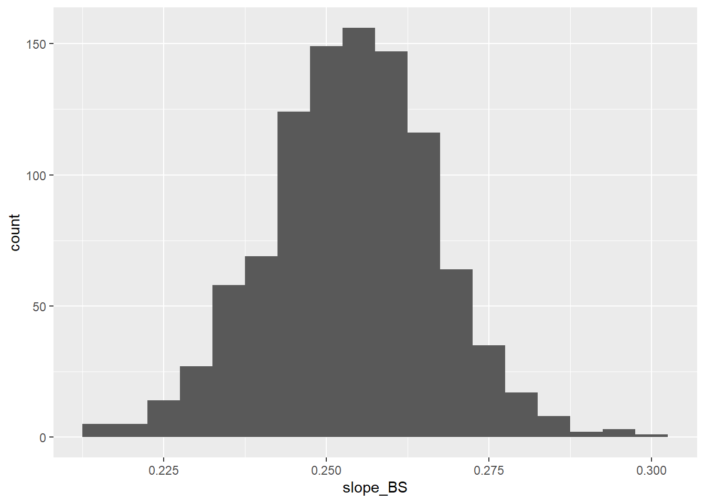

You’ve likely seen linear regression in earlier course (perhaps even in middle school?) but before we jump into inference (tests and confidence intervals) for regression, let’s review the basic concepts of linear regression.
4.1 Linear Regression Basics
So far, we’ve been summarizing the relationship between two categorical variables (comparing two proportions or chi-squared tests) or one categorical variable (predictor) and one quantitative variable (response) (comparing two means or ANOVA). With linear regression, we are interesting in summarizing the relationship between a quantitative response and a quantitative predictor. Typically, we hope to show that variation in the response can be explained by variation in the predictor.
Response:
Explanatory/Predictor:
In previous recent examples, we saw:
Attempting to see a relationship between environment (predictor) and hours spent in darkness (response) in mice.
Attempting to see a relationship between running strategy (predictor) and time to second base (response).
Attempting to see a relationship between field position (predictor) and running speed (response).
Attempting to see a relationship between student major (predictor) and time to complete a puzzle (response).
In all cases, the predictor was categorical, and the response was quantitative.
For other recent examples:
Attempting to see a relationship between education level (predictor) and caring about whether data is singular or plural (response).
Attempting to see a relationship between survey mode (predictor) and whether or not the respondent indicated they did not exercise.
In these cases, the predictor was categorical as was the response.
Now, we turn to quantitative predictor(s) and quantitative response. We’ll focus on a single predictor, though it is possible to multiple predictors. Linear regression is the statistical method for fitting a line to data where the relationship between two quantitative variables (\(x\) and \(y\) can be modeled by a straight line with some error.
We typically start with a scatterplot, and we explore the plot looking for 4 things:
Direction:
Form:
Strength:
Unusual observations:
Example: The data in the file lego.csv give (from the Lego website) the number of pieces and price for 157 Lego products.
If we can imagine fitting a straight line to the data, we are implicitly assuming a predictor/response relationship. For the Lego data, what is the predictor and what is the response?
To fit a straight line, we assume the statistical model
Residuals help us determine how well a model fits, and we often plot them, with the residuals on the \(y-\)axis amd the predicted values on the \(x-\)axis.
The strength of the model fit can be assessed using \(R^2\), the coefficient of determination. \(R^2\) describes the amount of variation in the \(y\) that is explained by the least squares line.
Fun fact: Sums of squares come up here too! And can also be used to calculate \(R^2\)! \[
SST = \sum_{i=1}^n (y_i - \bar y)^2
\] and \[
SSE = \sum_{i=1}^n (y_i - \hat y_i)^2 = \sum_{i=1}^n \hat e_i^2
\] Then \[
R^2 = \frac{SST - SSE}{SST} = 1 - \frac{SSE}{SST}
\]
We’ll return to these in a bit.
Example: Some studies have suggested that aerobic activity can benefit brain development and cognition in growing children (Chaddock-Heyman, 2015). It is conjectured that the higher your aerobic activity as measured by VO\(_2\) max (mL/kg/min), the thinner the cortical grey matter in the superior and anterior frontal lobes (measured with an MRI). A sample of children was recruited to participate in the study, and the data are in the file vo2max.csv.
Plot the data. What can we say about direction, form, and strength?
\(R\)
Fitted line
Residual plot. Anything concerning?
\(R^2\)
Example: In a survey of statistics students at Hope College, two of the questions asked were their current GPA and how many classes they failed to attend during the past three weeks. The data are in the file missclass.csv.
Plot the data. What can we say about direction, form, and strength?
\(R\)
Fitted line
Residual plot. Anything concerning?
\(R^2\)
Example: We expect the number of doctors in a city to be related to the number of hospitals, reflecting both the size of the city and the general level of medical care. The US Census Bureau regularly collects such data for many metropolitan areas in the US. The file MetroHealth83.csv proves a sample of 83 metropolitan areas that have at least two community hospitals. Let’s focus on trying to predict the number of MDs (\(y\)) from the number of hospitals (\(x\)).
Plot the data. What can we say about direction, form, and strength?
\(R\)
Fitted line
Residual plot. Anything concerning?
\(R^2\)
4.3 Inference for Regression (Chapter 24)
We reviewed the least squares regression line, now we’ll move on to using the LS line to test whether or not there is a relationship between two continuous variables. We’ll also construct confidence intervals for the slope.
Example: The R package palmerpenguins contains data collected by Dr. Kristen Gorman and the Palmer Station, Antarctica LTER (Long Term Ecological Research Network). The data set penguins contains data on 344 penguins from 3 different species, and includes variables like bill length, bill depth, body length, and body mass. For more information, see Allison Horst’s GitHub page (she also has great penguin artwork!). Let’s start with the relationship between bill length (\(y\)) and flipper length (\(x\)).
Plot the data. What can we say about direction, form, and strength?
library(palmerpenguins)
Warning: package 'palmerpenguins' was built under R version 4.4.3
head(penguins)
# A tibble: 6 × 8
species island bill_length_mm bill_depth_mm flipper_length_mm body_mass_g
<fct> <fct> <dbl> <dbl> <int> <int>
1 Adelie Torgersen 39.1 18.7 181 3750
2 Adelie Torgersen 39.5 17.4 186 3800
3 Adelie Torgersen 40.3 18 195 3250
4 Adelie Torgersen NA NA NA NA
5 Adelie Torgersen 36.7 19.3 193 3450
6 Adelie Torgersen 39.3 20.6 190 3650
# ℹ 2 more variables: sex <fct>, year <int>
There is some true relationship between bill length and flipper length, but we can’t ever know it. If we picked a different random sample of penguins, we’d likely get at least a slightly different relationship due to sample-to-sample variability. This will lead to variability in the regression line. We’re going to focus on variability in the slope of the line (just as in previous situations we focused on variability in the sample mean, sample proportion, difference in sample means, difference in sample proportions, etc.).
Let’s go to the applet to get a visual of what happens if we do this over and over. We’ll create a population with 20000 observations with a true slope of 2.
draw a sample of size 20, and fit a line. What’s the estimated slope?
another sample of size 20
build up slowly until we have 100 samples
notice the shape in the estimated lines
Go up to 1000. What do you notice about the distribution of the estimated slopes?
4.3.1 Randomization test for the slope
We want to see if there is a linear relationship between bill length and flipper length. The relevant hypotheses can be written in terms of the population slope parameter. Here, the population is all penguins that will ever live near Palmer Station, Antarctica.
H\(_0:\)
H\(_a:\)
In the randomization test, we permute one variable to eliminate any existing relationship. That is, we set the null hypothesis to be true, and measure the natural variability in the data due to sampling but not due to the variables being related. In the two sample problem, we did this by randomly assigning a group label to one of the outcomes (by shuffling cards and dealing into stacks). In the matched pairs problem we did this by randomly determining whether to swap the first/second observation. Here, we will do this by randomly rematching bill length and flipper length observations. By doing this, any pattern in the linear model that is observed is due only to random chance and not an underlying relationship. The randomization test compares the slopes calculated from the repeated randomizations with what was observed in the data.
Now, we are not assuming a null hypothesis is true. Instead, we sample with replacement from the data and we keep linked the \(x\) and \(y\) responses. For each bootstrap sample, we draw a sample with replacement of matched \((x,y)\) pairs, drawing as many pairs as there were observed in the original data set. We then fit the least squares model, and note the fitted \(\hat\beta_{1,boot}\). We repeated this process many times and build up a distribution of bootstrap values of the slope. We can then obtain a bootstrap confidence interval by either pulling the appropriate percentiles from the distribution of bootstrapped slopes or finding the SE of the bootstrap values and calculating a bootstrap SE confidence interval.
Back to the penguins:
boot.samples<-data.frame(sim=1:1000,slope_BS=NA)#For each row in the data set, draw a bootstrap sample from the original data and find## the slope#for(i in1:1000){ sample_BS <- penguins[sample(1:nrow(penguins),nrow(penguins), replace=TRUE),] model_BS <-lm(bill_length_mm~flipper_length_mm,data=sample_BS) boot.samples$slope_BS[i]<-model_BS$coefficients[2]}head(boot.samples)
#Histogram#boot.hist<-ggplot(boot.samples, aes(slope_BS)) +geom_histogram(binwidth=0.005)#See the plot#boot.hist

#To get the bootstrap percentile confidence interval, ##start by ranking the bootstrap means from smallest to largest #rankmean<-sort(boot.samples$slope_BS)#Lower endpoint is the 2.5th percentile (95% confidence)#lower<-rankmean[25]lower
[1] 0.2275035
#Upper endpont is the 97.5th percentile (95% confidence)#upper<-rankmean[975]upper
[1] 0.2784711
#Bootstrap standard error of the mean#sd(rankmean)
[1] 0.01280514
4.3.3 Mathematical model for inference about the slope
Let’s now consider the relationship between body mass and flipper length.
Plot the data. What can we say about direction, form, and strength?
Like we did with the randomization test, we can use the mathematical model approach to see if there’s convincing evidence of a relationship between body mass and flipper length. We’re testing the same hypotheses we did before:
H\(_0:\)
H\(_a:\)
To do this, we’ll use the test statistic
We have an estimate, and we have a null value. We need an SE.
Confidence intervals will also have the same form we’ve seen before.
Just as we’ve seen before, the mathematical model requires that some conditions be met:
Linearity: data should follow a linear trend. If we have a nonlinear trend we need to use a different approach.
Independent observations: The most frequent violation of this one with regression comes from data taken sequentially in time.
Nearly normal residuals: violations can be due to outliers or influential points
Constant or equal variance: Can be diagnosed with a residual plot. We’ve seen this violated with the doctors data set
We can check these using residual plots. How will violations manifest in the residual plot?
Linearity: residuals that look themselves like a model could be fit
Independent observations: cyclical patterns
Nearly normal: residuals that stand out from the rest
Constant variance: wedge shape
Let’s look at some examples where assumptions may be violated. In the first example, we are modeling \(y=\)work hours required to complete a job as a function of \(x=\)lot size. The data are in the api2lm package.
In the next example, we are considering whether the number of days of training for a new sales employee (\(x\)) affects their performance score (\(y\))
In our final example, we consider data taken over 16 months. In this data set, we have the number of orders a company received (\(x\)) and the number of manhours required to process those orders (\(y\)).
Without the assumed conditions, the test statistic does not have the assumed \(t\) distribution. However, we’re looking for large deviations.
Linearity: most important if we’re trying to understand the relationship between \(x\) and \(y\). The model itself is not an accurate portrayal of the relationship. Fitting different models is the fix–in future classes!
Independence: very important, but hardest to diagnose.
Normality: Less important than linearity and independence. The line is still okay, it’s the SEs that will be off if this one is not met. Neither randomization test nor the bootstrap interval require this condition.
Constant variance: Like normality, the line is still okay. But, p-values will be wrong if this one is severely violated. Randomization test and bootstrap interval don’t need this one either.
Let’s go back to the doctors data set, and consider the relationship between number of beds and number of hospitals.
The ANOVA model and the regression model are really the same thing. To see this, let’s look a the regression model more closely
\(SSE\) is the sum of squared residuals that is minimized when we estimate the least squares regression line. It’s the errors that still occur when predicting with the fitted model. \(SSTotal\) is the sum of squared deviations from the mean of the responses. \(\bar y\) is a crude method for estimating the model–just estimate everything with the average rather than taking the \(x\) value into account. This is the same as the \(SSTotal\) in the ANOVA model. The difference between these two, \(SSModel = SSTotal - SSError\) is the amount of original variability in the responses that is successfully explained by the model.
If \(SSModel\) is large relative to \(SSError\), then the model has done a good job of explaining the variability in the response. Here’s why: if the data follow the line perfectly then all the \((y - \hat y)^2\) will be 0, and \(SSE\) would be 0–all of the variability is explained by the model. On the other hand, if \(SSModel=0\), then every prediction is the same as the mean and we get no useful information from the predictor variable. In practice, obviously, we don’t see either of these two extremes. But, we can consider the question of whether the amount of variability explained by the model is more than we would expect to see by random chance, compared to the variability in the error term.
The ANOVA table carries over as well:
Source
\(df\)
SS
MS
F
Model/Reg
1
SSModel
MSModel
MSModel/MSError
Error
\(n-2\)
SSError
MSError
Total
\(n-1\)
SSTotal
Everything works the same way! We still divide the \(SSModel\) and \(SSError\) by their \(df\) to get the \(MSModel\) and \(MSError\), respectively. The \(df\) for Total is still (# observations - 1). The \(df\) for Model is 1 because there is one predictor, which leaves \(n-2\)\(df\) for Error.
Like before, when the predictor is ineffective, \(MSModel\) and \(MSError\) should be about the same. When the predictor is useful, \(MSModel\) will be large relative to \(MSError\). We can use the same ratio we used before:
\[
F = \frac{MSModel}{MSError}
\]
We are testing
H\(_0:\) The model is ineffective (or, equivalently, \(\beta_1 = 0\))
H\(_a:\) The model is effective (or, equivalently, \(\beta_1 \neq 0\))
How do we know if \(F\) is big enough to convince us that the null is not true? Again, we’ll compare it to what we would expect to see either through repeated randomizations assuming the null hypothesis (randomization test) or by comparing it to the \(F\) distribution with \(df_1=1\) and \(df_2=n-2\).
Let’s go back to the penguin data, looking at the relationship between body mass and flipper length.
summary(lm(formula = body_mass_g ~ flipper_length_mm, data = penguins))
Call:
lm(formula = body_mass_g ~ flipper_length_mm, data = penguins)
Residuals:
Min 1Q Median 3Q Max
-1058.80 -259.27 -26.88 247.33 1288.69
Coefficients:
Estimate Std. Error t value Pr(>|t|)
(Intercept) -5780.831 305.815 -18.90 <2e-16 ***
flipper_length_mm 49.686 1.518 32.72 <2e-16 ***
---
Signif. codes: 0 '***' 0.001 '**' 0.01 '*' 0.05 '.' 0.1 ' ' 1
Residual standard error: 394.3 on 340 degrees of freedom
(2 observations deleted due to missingness)
Multiple R-squared: 0.759, Adjusted R-squared: 0.7583
F-statistic: 1071 on 1 and 340 DF, p-value: < 2.2e-16
Recall \(R^2\), the coefficient of determination. When we were doing the review of linear regression we mentioned that \(R^2\) can be interpreted as the amount of variability in the response that is explained by the model. Here’s another way to calculate \(R^2\): \[
R^2 = \frac{SSModel}{SSTotal}
\]
For modeling body mass as a function of flipper length
We can use \(R^2\) to compare models. Suppose we are trying to decide if bill length or flipper length is a better predictor of body mass in penguins.
Using flipper length:
anova(penguins2.lm)
Analysis of Variance Table
Response: body_mass_g
Df Sum Sq Mean Sq F value Pr(>F)
flipper_length_mm 1 166452902 166452902 1070.7 < 2.2e-16 ***
Residuals 340 52854796 155455
---
Signif. codes: 0 '***' 0.001 '**' 0.01 '*' 0.05 '.' 0.1 ' ' 1
So Total Sum of Squares here is \(166452902 + 52854796 = 219307698\)
Using bill length:
penguins3.lm<-lm(formula = body_mass_g ~ bill_length_mm, data = penguins)summary(penguins3.lm)
Call:
lm(formula = body_mass_g ~ bill_length_mm, data = penguins)
Residuals:
Min 1Q Median 3Q Max
-1762.08 -446.98 32.59 462.31 1636.86
Coefficients:
Estimate Std. Error t value Pr(>|t|)
(Intercept) 362.307 283.345 1.279 0.202
bill_length_mm 87.415 6.402 13.654 <2e-16 ***
---
Signif. codes: 0 '***' 0.001 '**' 0.01 '*' 0.05 '.' 0.1 ' ' 1
Residual standard error: 645.4 on 340 degrees of freedom
(2 observations deleted due to missingness)
Multiple R-squared: 0.3542, Adjusted R-squared: 0.3523
F-statistic: 186.4 on 1 and 340 DF, p-value: < 2.2e-16
anova(penguins3.lm)
Analysis of Variance Table
Response: body_mass_g
Df Sum Sq Mean Sq F value Pr(>F)
bill_length_mm 1 77669072 77669072 186.44 < 2.2e-16 ***
Residuals 340 141638626 416584
---
Signif. codes: 0 '***' 0.001 '**' 0.01 '*' 0.05 '.' 0.1 ' ' 1
So Total Sum of Squares here is \(77669072 + 141638626 = 219307698\). The same! This is because \(SSTotal\) is calculated based only the response–the body mass–which is the same for both models. What’s changing is how that variability is apportioned–to predictor or to error.
So, \(R^2\) for flipper length is:
while \(R^2\) for bill length is:
The models themselves are really doing the same thing, too. Recall the model for the ANOVA is
\[
y_i = \mu_i + e_i
\] and the model for regression is \[
y_i = \beta_0 + \beta_1 x_i + e_i
\] I was careful (I think!) to always say that predictions based on the model give us the average response we would expect to see for a given \(x\) value. \(\beta_0 + \beta_1\) really is the mean response we expect for a given value of \(x_i\), and \(\mu_i\) is the mean response we expect for a given group \(i\). The only difference is whether our predictor is a particular numeric value or the level of a category.
4.5 Inference for Prediction
We’ve already seen that we can use a linear regression model to predict the mean response for a given value of the explanatory variable. Going back to the Lego data set, we can use the model to predict the mean price for a Lego set with \(x\) number of pieces. For example, if we want to predict the price for a Lego set with 500 pieces:
\[
\hat y = 4.86 + 0.105(500) = 57.36
\]
Beyond prediction of the mean response, we sometimes want a margin of error around this mean response which will describe how accurate we expect this prediction to be. We can get a confidence interval for the prediction, but there are two different types. To figure out which type to use, we must first decide our goal for the interval–do we want to predict the mean response for a particular value of \(x=x^*\) or do we want to predict the response for an individual observation (i.e., the next response) corresponding to a particular value of \(x=x^*\). The value of the prediction is the same in both cases, but they will have different standard errors.
In the Lego example, if we want to know the average price for all Lego sets with 500 pieces we would use an interval for the mean response. However, if we want the interval to predict the price of a particular Lego set with 500 pieces, we need the interval for a single prediction. These are often distinguished by using different terms for the two intervals.
To estimate the mean response, we use a confidence interval for \(\mu_Y\). It estimates the mean response for \(y\) when \(x=x^*\). This mean response \[
\mu_Y = \beta_0 + \beta_1 x^*
\] is a parameter, a fixed (unknown) number.
To estimate an individual response, we use a prediction interval. A prediction interval estimates a single random response \(y\) rather than a parameter like \(\mu_Y\). It’s harder to predict a single response than it is to predict a mean response, and this will manifest in the size of the respective standard errors.
Both intervals have the usual form
but the prediction interval will have a larger SE than the confidence interval. We’ll let R calculate these for us, but just to see the difference:
Notice the components of the SE
Let’s do this with Lego data set. We’ll start with a confidence interval for the mean response with 500 pieces.